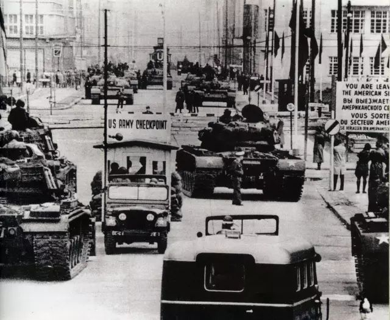
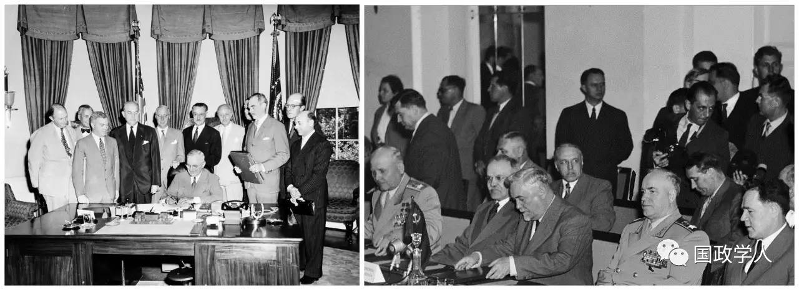
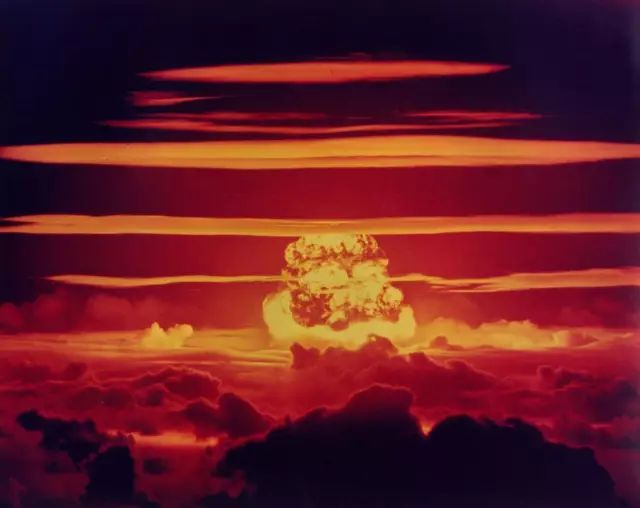
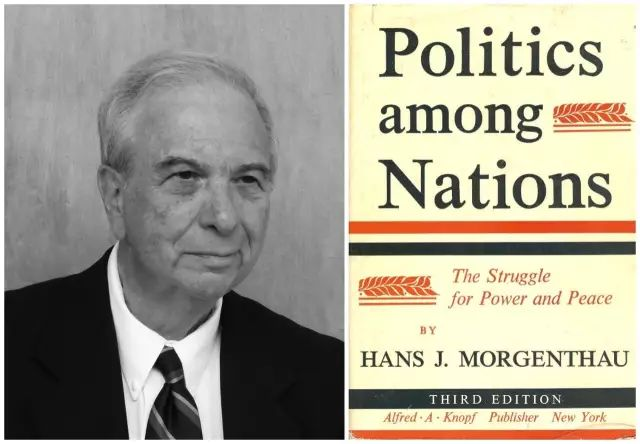
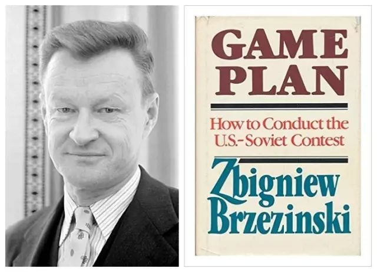

收录于合集

不懂冷战思维，就不懂大国政治
我们常常会听到批判冷战思维的声音。似乎冷战思维就是个早该扫进历史垃圾堆的玩意。谁要是染上了冷战思维，就会走火入魔。
但若问这些人，什么是冷战思维？回答无外乎两种：
第一种回答认为，冷战思维就是 对抗思维 ，而当今世界的主流是和平与发展。所以冷战思维不合时宜。

※1961年，美苏坦克在柏林查理边检站紧张对峙
第二种回答则认为，冷战思维就是 意 识形态对抗思维 。而今天的世界讲究的是求同存异，尤其中美两个意识形态截然不同的大国，如果不能做好表率，就会让全世界重新回到曾经的阵营对抗状态。

※左图为《北大西洋公约》签字仪式，右图为《华沙条约》签字仪式
这两种回答都是既没有看清世界，也没有搞明白什么是冷战。
从看清世界的角度讲。 由于国际社会的无政府特质，国际关系先天具备丛林属性。 负责任的大国总是善于在大国之间寻找合作的交集，通过共治问题小国、划分治理范围来尽量消除国际冲突。但是，大国之间先天互相猜忌，治理范围的划分又未必总是尽如人意。这个时候，冲突就会产生。
二战结束70多年来，之所以没有再爆发三战，最重要的原因就在于核武器的出现，硬性遏制了世界大战的爆发。因为有核大国之间的全面战争只有一个结局，那就是互相毁灭，进而连带毁灭地球。

但是，因为国际社会的无政府状态并未消失，国家间的权力博弈就不会停止，而只会改变路径和形式。这就是为什么现代国际政治学的创始人摩根索，预言未来最可怕的帝国主义，既非军事帝国主义，也非经济帝国主义，而是 文化帝国主义 ，是 披着普世价值外衣的新国家主义 。
摩根索当年说这个话时，正是左派革命理想弥漫全球的时候，是苏联占据话语权上风的时候。是很多西方科学家、年轻精英分子纷纷主动给苏联免费送情报、泄露高端技术的时代。所以他才要揭批苏联红色帝国主义的本质，为自己的国家敲响警钟。但是，曾经几何时，左派革命理想退潮，美国掀起新的伪普世价值浪潮，夺取了全球话语权。所以美国就不再刻意去提文化帝国主义的话题，也不希望大家再去抵制普世价值伪装下的文化帝国主义。

※汉斯·摩根索与《国家间政治》
可历史的事实不是美国的需求能涂抹干净的。事实证明，在核威慑的时代，大国博弈并未消失，只是采取了新形式，这个新形式就是冷战。
这就提醒我们，学术界的口头禅师们老生常谈的“冷战”，其实是混淆了两个截然不同的概念：一个是战略层面的冷战，一个是历史层面的冷战。
所谓战略层面的冷战，其实是热战的对应概念，是斗争模式的一种，特指运用间接对抗手段克敌制胜。
历史层面的冷战则特指美苏之间的冷战，其实质是两个超级大国围绕全球霸权展开的一场霸权争夺战。正如布热津斯基在《竞赛方案》中指出的那样，这场争霸战的双方虽然都使用了大量道德的、政治意识形态的宣传语言，但是，在本质上，这次冲突与历史上的其他冲突没有本质区别，其核心是美苏争夺全球控制权的权力斗争，与意识形态分歧没有必然关系。“对这场历史性冲突的焦点、内容以及最终结果具有关键作用的正是地缘政治和战略方面的考虑。”

※布热津斯基与《竞赛方案》
如果说这场冲突和历史上的同类冲突有什么明显的不同，那就是这场冲突采取了冷战而非热战的形式。其原因，既非美苏的道德水准提高了，也不是冲突从国际社会中消失了，而是因为前面所说的，核武器因素遏制了热战，使之只能选择冷战。
这就告诉我们，大国博弈从未停止，只是因为技术发展暂时改变了表现形式。美苏之间的冷战虽然结束了，但人类仍然处于广义的冷战时代之中。 只要国际社会仍处于无政府状态，国家间关系的丛林性质就不会消失。只要核威慑仍然有效，大国博弈就注定会继续走冷战的道路。
换言之， 核时代就是冷战时代。 这和热兵器战争时代、冷兵器战争时代、内燃机战争时代一样，是不以人类意志为转移的技术变革产物。也可以说， 与核时代相匹配的大国战略就是冷战战略 。故而，我们要做的，绝不是妖魔化冷战，那只能在思维上画地为牢，在行动上自缚手脚。这与面对闪电战，妖魔化装甲部队；面对热兵器革命，妖魔化火枪；面对航空革命，妖魔化飞行器，是一样的可怕。我们现在恰恰要跳出道义的、意识形态的固化思维，真正从战略研究、国际政治研究的角度，深入研究冷战、思考冷战。方能在“冷战时代”保持主动，做好负责任的成功大国。

来源：王鼎杰战略智库授权
筛选：汪乐乐
编辑：晞哲
您可能还会喜欢：
期刊分享 | 国际关系相关专业所有核心期刊免费获取（最新pdf版）